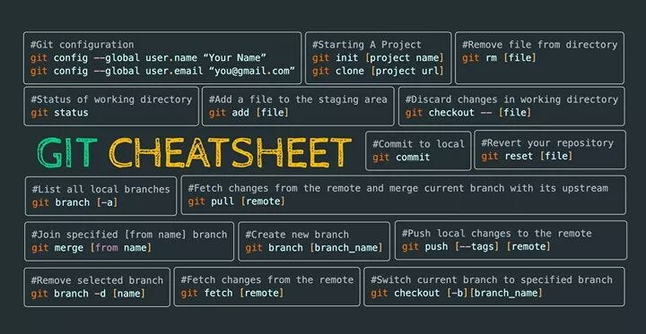
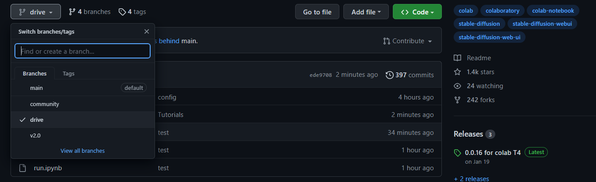

¿Cómo utilizar Git en un proyecto colaborativo?
¿Qué es Git?
Git es un sistema de control de versiones distribuido. Fue creado por Linus Torvalds en 2005. Veamos sus características y funcionalidades principales:
- Control de Versiones: Permite llevar un historial completo de los cambios en el código fuente. Cada conjunto de cambios se registra con un "commit", el cual tiene su propio identificador único.
- Distribuido: A diferencia de los sistemas de control de versiones centralizados, donde hay un único repositorio central (como SVN), en Git cada desarrollador tiene su propia copia local del repositorio, con todo el historial de cambios. Esto permite trabajar de forma desconectada y luego sincronizar los cambios con otros repositorios.
- Ramas (Branching) y Fusionado (Merging): Git permite crear ramas de tu código. Esto es útil para desarrollar características, arreglar errores, o experimentar sin afectar la rama principal (comúnmente llamada "master" o "main"). Una vez que el trabajo en una rama está completo, se puede fusionar de nuevo con la rama principal.
- Velocidad: Dado que los desarrolladores trabajan con sus propias copias locales del repositorio, la mayoría de las operaciones (como commits o cambios de rama) son casi instantáneas.
- Colaboración: Git es esencial para equipos de desarrollo, permitiendo a múltiples personas trabajar en un mismo proyecto y luego combinar (o "merge") sus cambios en un único repositorio.
Primeros pasos con Git
Después de haber completado la instalación de Git en tu máquina, estás listo para sumergirte en su amplio conjunto de funcionalidades. La interacción principal con Git se realiza a través de la línea de comandos, aunque existen interfaces gráficas que facilitan ciertas operaciones.
Al iniciar, es crucial familiarizarse con algunos comandos esenciales. El comando git init se utiliza para inicializar un nuevo repositorio. Una vez que hayas hecho cambios en tus archivos, puedes utilizar git add para agregar esos cambios al área de preparación, seguido de git commit para registrar esos cambios en el historial del repositorio. Estos son solo los comandos fundamentales; Git ofrece muchas más herramientas y opciones que te permitirán gestionar y rastrear tus proyectos de forma eficiente.
Buenas practicas y paso a paso para colaborar
Cuando trabajamos con Git, es fundamental adherirse a ciertas buenas prácticas que garantizan una colaboración efectiva y la integridad del código. La coherencia en los mensajes de commit, por ejemplo, ayuda a los equipos a entender los cambios realizados, siendo aconsejable escribir mensajes claros y descriptivos que expliquen el "por qué" del cambio, no solo el "qué". Además, es recomendable trabajar en ramas específicas para características o correcciones, en lugar de hacerlo directamente en la rama principal. Esto facilita la revisión del código y evita posibles conflictos entre diferentes características desarrolladas simultáneamente.
Por otro lado, antes de enviar un pull request, es una buena práctica asegurarse de que tu código esté actualizado con la última versión del repositorio principal. Esto se logra haciendo regularmente "pull" o "fetch" seguido de "merge". Así, se reduce la posibilidad de conflictos cuando se solicita la fusión de cambios. Además, antes de finalizar tu trabajo, prueba tus cambios localmente para asegurarte de que todo funciona correctamente. Esta disciplina, aunque puede parecer tediosa, garantiza un flujo de trabajo más fluido y eficiente para todo el equipo.
- Crear un repositorio: El primer paso es crear un repositorio en GitHub. Para ello, debes iniciar sesión en tu cuenta y hacer clic en el botón "New repository" en la página principal. Luego, debes completar el nombre del repositorio y una breve descripción. También puedes elegir si el repositorio será público o privado. Una vez que hayas hecho clic en "Create repository", tu repositorio estará listo para usar.
-
Clonar el repositorio:
Una vez que hayas creado el repositorio, debes clonarlo en tu máquina local. Para ello, debes copiar la URL del repositorio haciendo clic en el botón "Code" y luego en el icono del portapapeles. Luego, debes abrir la terminal y ejecutar el siguiente comando:
git clone -
Crear una rama:
Una vez que hayas clonado el repositorio, debes crear una rama para trabajar en ella. Para ello, debes ejecutar el siguiente comando:
git checkout -b -
Hacer cambios:
Ahora puedes hacer los cambios que desees en los archivos del proyecto. Una vez que hayas terminado, debes agregar los cambios al área de preparación y hacer un commit. Para ello, debes ejecutar los siguientes comandos:
git addgit commit -m -
Subir los cambios:
Una vez que hayas hecho un commit, puedes subir los cambios a GitHub. Para ello, debes ejecutar el siguiente comando:
git push origin - Crear un pull request: Una vez que hayas subido los cambios, debes crear un pull request. Para ello, debes hacer clic en el botón "Compare & pull request" en la página principal del repositorio. Luego, debes completar el título y la descripción del pull request y hacer clic en el botón "Create pull request".
- Revisar el pull request: Una vez que hayas creado el pull request, los colaboradores del proyecto podrán revisarlo y aprobarlo. Si todo está bien, el pull request será fusionado con la rama principal del repositorio.
- Eliminar la rama: Una vez que el pull request haya sido fusionado, puedes eliminar la rama. Para ello, debes hacer clic en el botón "Delete branch" en la página principal del repositorio.